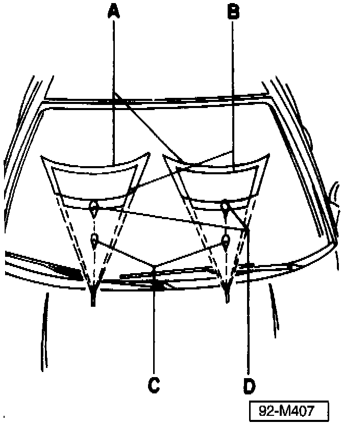

Washer Spray Nozzle - Spray Pattern Variation
Group: 92Number: 97-01
Date: Jan. 21, 1997
Subject:
New Washer Spray Nozzle Function
Model(s):
Golf, GTI, Jetta, Cabrio 1997
Condition
Spray pattern of washer nozzles varies at different temperatures.
Service
Condition is due to new design washer nozzles installed beginning production 08.96
^ This condition is normal, NO action is required.

^ Illustration indicates the approximate spray pattern for the temperatures listed below.
A. 20°C (68°F)
B. 0°C (32°F)
C. -10°C (14°F)
D. -20°C (4°F)